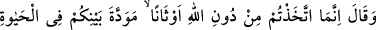
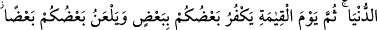
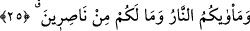
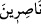
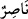

25. (İbrahim onlara) dedi ki: Siz, sırf aranızdaki dünya hayatına has muhabbet
uğruna Allah’ı bırakıp birtakım putlar edindiniz. Sonra kıyamet günü (gelip
çattığında ise) birbirinizi tanımazlıktan gelecek ve birbirinize lânet okuyacaksınız.
Varacağınız yer cehennemdir ve hiç yardımcınız da yoktur.
“(İbrahim onlara) dedi ki: Siz, sırf aranızdaki dünya hayatına has muhabbet
uğruna Allah’ı bırakıp birtakım putlar edindiniz.” Bu konuda sizin bir huccet ve
deliliniz yoktu. Bu, sadece aranızdaki sevgiden, onlara tapmak için toplandığınızda
karşılıklı hoş ve güzel muâmelenizden kaynaklanıyordu.
O putlara ibâdet etmekle siz bir topluluk ve birbirinizle dost olmak istersiniz. Böylece
birbirinize uyarsınız ve bu sayede de dostlar olursunuz. Müminlerin Allah’a ibâdet
ederken birbirlerine muhabbet ve şefkat beslemeleri ve dost olmaları gibidir bu. Ve
dünyada olduğu sürece o dostluk bâkîdir.
Dünyadan çıktıktan “sonra kıyamet günü (gelip çattığında ise)” işler alt üst olup
aranızdaki sevgiler, hoşluk ve güzellikler, buğz ve nefrete dönüşecek, “birbirinizi
tanımazlıktan gelecek ve birbirinize lânet okuyacaksınız.” Yâni birbirinize küfredip
taptığınız putları red ve inkâr edeceksiniz. Sizden putlara tapanlar, taptıkları putlara
sövüp sayacak; Allah da o putları sizin anlayacağınız şekilde konuşturarak birbirinize
lânet edip birbirinizi kötüleyeceksiniz.
“Suht”; kızarak ve öfkelenerek kovmak, uzaklaştırmak ve reddetmek demektir. Bir
insanın başka birisine bedduâsı anlamına gelir.
et-Te’vîlâtü’n-Necmiyye’de der ki: Nefs, dünya şehvetlerini kullanmanın vebâlini ve
cennet şehvetlerinden mahrum kalışının hüsrânını müşâhede edince, dünya şehvetlerine
küfredip dünyaya lânet eder. Çünkü bunlar, onun isyan ve şakâvetine sebep olmuşlardı.
Karşılık olarak dünya da ona lânet eder. Nitekim Rasûlullah (s.a.) buyurmuştur ki;
“Sizden biriniz dünyaya lânet edince, dünya da der ki: Kendisine en âsî olanımıza
Allah lânet etsin.”[171]
“Varacağınız yer cehennemdir ve hiç yardımcınız da yoktur.” Yani, hepinizin,
putların ve putlara tapanların, tâbîlerin ve metbûların varacakları en son yer ateştir,
orada ebedî kalacaklardır. Artık sizi bu ateşten kurtaracak hiçbir yardımcınız da yoktur.
Rabbim ise beni, sizin attığınız ateşten kurtarmıştı.
“__WORD__, “__WORD__ kelimesinin çoğuludur; çoğula karşılık çoğul olarak kullanılmıştır.
Takdiri şöyledir: Sizin hiçbirinizin asla bir yardımcısı yoktur.